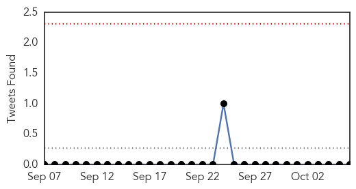
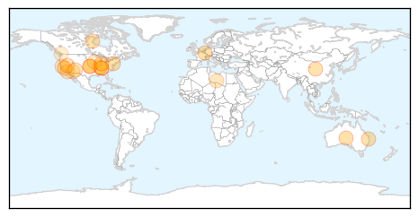
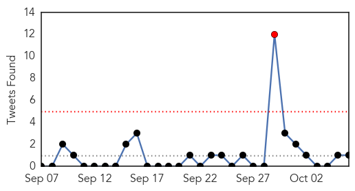

Influenza
30-Day Web Trend
6 alerts, 5 warnings

30-Day Twitter Trend
0 alerts, 0 warnings

Article Locations
Article Confidences
Top Articles:
- 0.999
- October Marks Start Of Flu Season
- 0.998
- Doctors anticipate nasty flu season
- 0.997
- Flu Shots Keep People Out of Hospital
- 0.997
- Flu-associated pneumonia tied to skipped flu vaccine
- 0.986
- What you need to know about this year's flu vaccine
- 0.981
- Seasonal illness on the rise, wash your hands
- 0.980
- FDA Clears the Focus Diagnostics Simplexa™ Flu A/B & RSV Direct Test to Include 53 New Virus Strains for the 2015-2016 Flu Season
- 0.978
- Flu Vaccine Helps Reduce Hospitalizations Due to Influenza Pneumonia
- 0.960
- Focus Diagnostics receives FDA clearance for flu, RSV test
- 0.958
- Get flu vaccine now, says Luxembourg's Health Ministry
- 0.955
- News Scan for Oct 06, 2015
- 0.940
- Studies Find Flu Vaccines Can Harm Your Heart, Infant And Fetus
- 0.925
- Flu Season Begins: Authorities Predict a Tough One
- 0.904
- Flu vaccine expected to be more effective this year
- 0.885
- Today's stories from newspapers in North Bay Nipissing
- 0.881
- Summit, Apache County Public Health offering free flu shots
- 0.872
- Howell County Health Department to host flu shot clinics –
- 0.776
- Nurse Flu Shot Compliance Reverberates Through Community
- 0.751
- October 6, 2015 Archives
- 0.751
- October 6, 2015 Archives
- 0.716
- Tough lessons learned from bird flu outbreak
- 0.584
- Today's stories from newspapers in Halton Hills
- 0.547
- New flu mapping system developed by Valley ER doctor
Top Tweets:
-
No tweets found for Oct 06, 2015
Unknown
30-Day Web Trend
0 alerts, 0 warnings

30-Day Twitter Trend
1 alerts, 0 warnings

Article Locations

Article Confidences

Top Articles:
- 0.986
- The cost of flu; Can you afford to skip the shot?
- 0.980
- Royal Liverpool Hospital suspected MERS patient remains in quarantine for tests
- 0.970
- Get Vaccinated Now, Experts Say « CBS Detroit
- 0.963
- Fayetteville Observer: Blog: HealthWise
- 0.962
- Jamaican Students Infected with Hand, Foot and Mouth Disease
- 0.953
- U.S. HealthWorks Announces Offer to Administer Flu Shots at Local Businesses
- 0.927
- 3 more linked to Saudi tested for MERS, news, Health News, AsiaOne YourHealth
- 0.917
- Chicago Tribune
- 0.917
- Chicago Tribune
- 0.917
- Chicago Tribune
- 0.917
- Chicago Tribune
- 0.917
- Chicago Tribune
- 0.917
- Chicago Tribune
- 0.917
- Chicago Tribune
- 0.917
- Chicago Tribune
- 0.917
- Rare Human Rabies Case Confirmed In Fremont County
- 0.915
- Deer Bluetongue Virus Spreads in Washington and Idaho Killing Hundreds
- 0.883
- Call for nurses to get winter flu vaccination
- 0.878
- Doctors debate diagnosis of Lyme disease
- 0.876
- Worcester to hold several flu clinics in October
- 0.835
- Challenges in eradicating malaria
- 0.834
- Foodborne botulism illnesses reported in Portugal
- 0.810
- portugal
- 0.798
- Blue-green algae forces organizers to cancel Great Ohio River Swim
- 0.788
- SA hospitals are running out of TB drugs
- 0.788
- Local health and school officials not seeing any pneumonia cases
- 0.762
- evenison
- 0.757
- Tests show suspected case of tuberculosis at St. F.X. a false alarm
- 0.756
- Skin rashes and fever in adults could signal life-threatening conditions
- 0.749
- Second organism identified in outbreak
- 0.747
- Dont worry , be horny!
- 0.743
- KCMO School District on alert after 60 students come down with symptoms of illness
- 0.740
- No, not all tap water in Africa is ‘unsafe for human consumption’
- 0.738
- African officials applaud Chinese pharmacologist's winning Nobel Prize for medicine
- 0.733
- African officials applaud Chinese pharmacologist's winning Nobel Prize for medicine - Xinhua
- 0.731
- Hospital Infections In Los Angeles
- 0.730
- US 'deeply regrets' strike on MSF hospital in Afghanistan
- 0.730
- Teenager killed as Israel cracks down on Palestinian unrest
- 0.730
- Saint Laurent and Stella McCartney wow at Paris Fashion Week
- 0.730
- Burkina Faso coup general ‘charged with attacking state security’
- 0.727
- French minister wants five ‘terrorists’ to be stripped of nationality
- 0.727
- New Volkswagen CEO warns of ‘massive cutbacks’ in wake of emissions scandal
- 0.721
- Star Princess sees 2nd norovirus outbreak of 2015
- 0.720
- Fact Check: Not all tap water in Africa ‘unsafe for consumption’
- 0.719
- Clinic opens early for Daybreak viewers
- 0.718
- Q&A: Is copper the answer for hospital infections?
- 0.718
- Is drinking tap water in Africa 'risky business'?
- 0.707
- Hotel housing Yemen PM in city of Aden hit by rockets
- 0.705
- IS group claims deadly attacks targeting Yemeni government, Gulf troops
- 0.705
- Top EU court backs student in landmark Facebook privacy case
Showing top 50 articles...
Top Tweets:
- 0.514
- RT: [CDC-Outbreaks] October 6 2015 (Investigation Update) Outbreak of Salmonella Enteritidis Infections Linked to... http://t.…